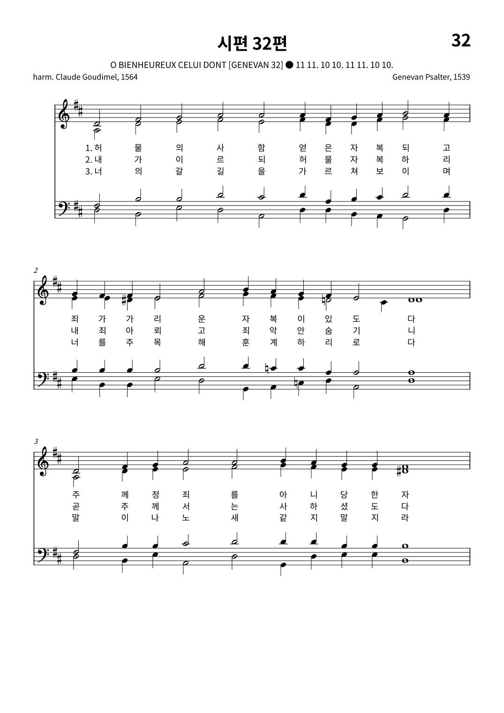

Psalm 32
O BIENHEUREUX CELUI DONT [GENEVAN 32] · 11 11. 10 10. 11 11. 10 10.
English title: Blest Is the Man Whose Trespass Is Forgiven
Tune: Genevan Psalter, 1539 · Harmony: Claude Goudimel, 1564 · Lyrics: Korean adaptation of Psalm 32 from the Korean Revised Version (AI draft adaptation · not yet theologically reviewed) · 3 stanzas
Score PDF MusicXML (for printing) MusicXML (for accompaniment, with prelude and repeats) Read Psalm 32 (Korean Revised Version)
Score
← Psalm 31B ListAccompaniment (in preparation)Psalm 33 →
Lyrics (Korean)
Stanza 1
허물의 사함 얻은 자 복되고
죄가 가리운 자 복이 있도다
주께 정죄를 아니 당한 자
간사 없는 자 복이 있도다
내가 토설치 아니하던 때에
종일 신음코 내 뼈가 쇠하니
주야로 주 손 누르시오니
내 진액 말라 가물 같도다
허물의 사함 얻은 자 복되고
죄가 가리운 자 복이 있도다
주께 정죄를 아니 당한 자
간사 없는 자 복이 있도다
내가 토설치 아니하던 때에
종일 신음코 내 뼈가 쇠하니
주야로 주 손 누르시오니
내 진액 말라 가물 같도다
Stanza 2
내가 이르되 허물 자복하리
내 죄 아뢰고 죄악 안 숨기니
곧 주께서는 사하셨도다
이로 인하여 경건한 자는
주를 만날 때 기도할지어다
홍수 넘쳐도 미치지 못하리
주는 은신처 날 보호하사
구원 노래로 에우시리라
내가 이르되 허물 자복하리
내 죄 아뢰고 죄악 안 숨기니
곧 주께서는 사하셨도다
이로 인하여 경건한 자는
주를 만날 때 기도할지어다
홍수 넘쳐도 미치지 못하리
주는 은신처 날 보호하사
구원 노래로 에우시리라
Stanza 3
너의 갈 길을 가르쳐 보이며
너를 주목해 훈계하리로다
말이나 노새 같지 말지라
자갈 굴레로 단속하여야
너희에게로 가까이 오리라
악인에게는 슬픔이 많으나
주 믿는 자를 인자 두르리
의인들이여 즐거워하라
너의 갈 길을 가르쳐 보이며
너를 주목해 훈계하리로다
말이나 노새 같지 말지라
자갈 굴레로 단속하여야
너희에게로 가까이 오리라
악인에게는 슬픔이 많으나
주 믿는 자를 인자 두르리
의인들이여 즐거워하라